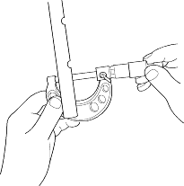
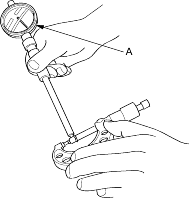
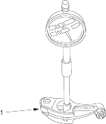

- Measure the diameter of the shaft at the first rocker location.

- Zero the gauge (A) to the shaft diameter.

- Measure the inside diameter of the rocker arm and check it for an out-of-round condition.
Rocker Arm-to-Shaft Clearance:
Standard (New):
Intake:0.017 - 0.050 mm
(0.0007 - 0.0020 in.)
Exhaust:0.018 - 0.054 mm
(0.0007 - 0.0021 in.)
Service Limit:0.08 mm (0.003 in.)

- Inspect rocker arm face for wear
- Repeat for all rockers and both shafts. If the clearance is over the limit, replace the rocker shaft and all overtolerance rocker arms. If any VTEC intake rocker arm needs replacement, replace rocker arms (primary and secondary as a set, or primary, mid and secondary as a set).